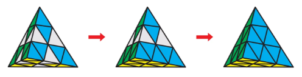

TUTORIAL PYRAMINX
- Orientar las Puntas (Esquinas Exteriores)
- Las 4 puntas piramidales giran de forma independiente y no afectan a ninguna otra pieza. Gira cada una de las 4 puntas exteriores hasta que coincidan con el color del bloque triangular inmediatamente inferior (los centros).
- Orientar los Centros de una Cara Base (La Cara Azul)
- En el Pyraminx, los centros son las piezas con 3 pegatinas situadas justo debajo de las puntas (tienen 1 sola cara visible por lado).
- Elige una cara base para empezar (habitualmente la Azul).
- Busca las 3 puntas que tienen el color azul.
- Gira las caras grandes para que las 3 pegatinas azules de los centros queden en la misma cara. Esto formará una figura tipo "hélice" o "trébol" en la cara base.
- Resolver la Primera Cara (Insertar las 3 Aristas Inferiores)
- Coloca la cara azul hacia abajo. Ahora debes insertar las 3 aristas azules (piezas con 2 colores) en la capa inferior.
- Busca en la capa superior una arista que contenga color azul y colócala sobre su posición correspondiente:
- Si la pegatina azul te mira a la izquierda, aplica la secuencia derecha: R U' R'
- Si la pegatina azul te mira a la derecha, aplica la secuencia izquierda: L' U L
- Si una arista azul está abajo pero girada o fuera de sitio, aplica R U' R' para subirla a la capa superior y luego insértala correctamente.
- Resolver la Capa Superior (Últimas 3 Aristas)
- Con la cara azul resuelta en la base, gira la punta superior (U) para alinear los centros superiores con sus caras correspondientes. Te quedarán solo 3 aristas por resolver en la parte superior:
- Giro cíclico de 3 aristas (Tres piezas fuera de sitio). Aplica la secuencia de "pescadito": R U R' U R U R' (Si no se resuelve a la primera, vuelve a aplicarlo una vez más).
- Dos aristas en su sitio pero volteadas sobre sí mismas. Coloca las dos aristas mal orientadas de frente y aplica: R' L R L' U' L U R'
